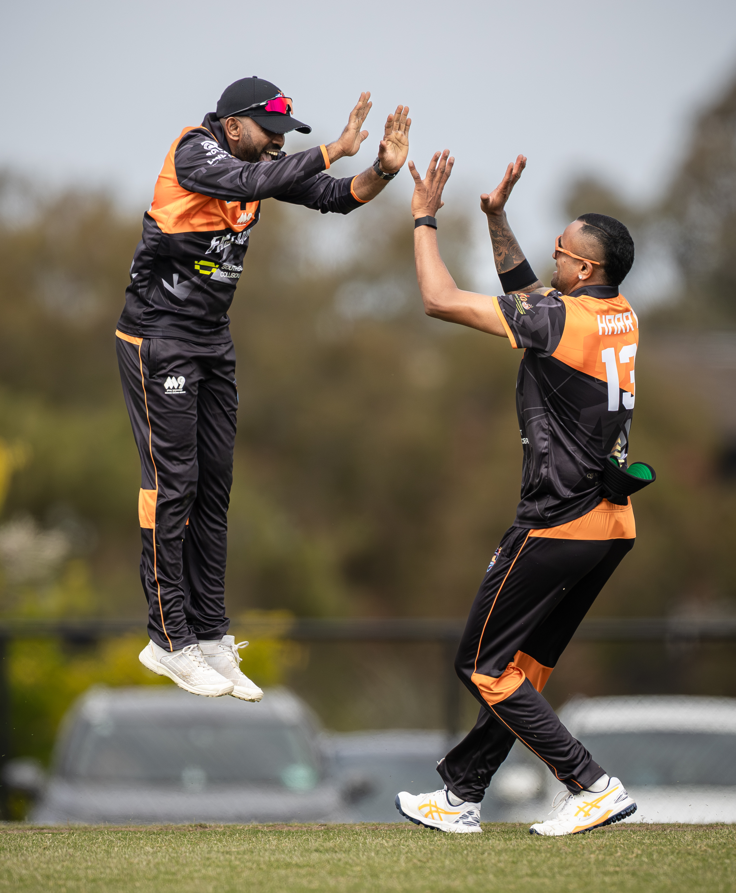

Australia's Premier Multicultural
Franchise T20 Competition
MSL Premiers is designed to elevate multicultural cricket to a new level, combining elite athletes, franchise ownership, premium venues and world-class production into one unforgettable sporting experience.
Each season brings together talented domestic and international cricketers representing diverse communities from across Australia and beyond.
Professional live broadcasting, premium digital content and an exciting match-day atmosphere ensure every game reaches audiences far beyond the boundary. MSL Premiers is more than a cricket tournament — it is a celebration of culture, competition and community.
What Makes MSL Premiers Different

Creating Opportunities Beyond The Boundary
Melbourne Super League is committed to developing the next generation of cricketers.
MSL provides emerging players with a professional platform to showcase their talent alongside experienced domestic and international athletes while competing in a high-performance environment. Through national exposure, live broadcasts and strong industry connections, players gain valuable opportunities to elevate their careers and pursue higher levels of cricket.
Every match represents another opportunity to be discovered.
Opportunities Include
Bringing Every Match To The World
MSL delivers a premium viewing experience that extends well beyond the cricket ground. Every match is professionally produced using high-quality broadcast technology, expert commentary and engaging digital storytelling, allowing fans around the world to experience the excitement live.
From match highlights and player interviews to behind-the-scenes content, MSL continues to set new standards in digital sports entertainment.